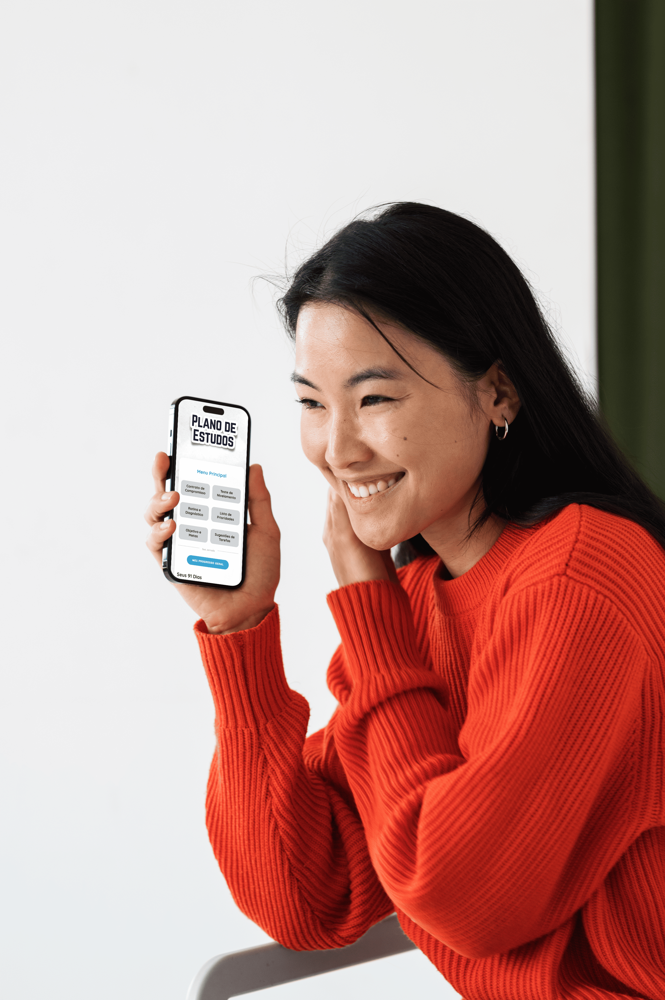

Código da Fluência: o ecossistema definitivo para a sua fluência
Aprenda idiomas de forma autônoma com acompanhamento de perto. Junte-se à lista de espera para o próximo grupo de mentoria e garanta acesso exclusivo ao nosso método e web-app.

🎯 Mentoria Estratégica
Acompanhamento de perto para alinhar objetivos e corrigir rotas.
🧠 Plano de Estudos
Um roteiro claro dizendo exatamente o que estudar todos os dias.
⚡ Web-App Verbum
Nosso sistema de flashcards para você nunca mais esquecer o vocabulário.
📚 Plataforma Autonomia
Aulas curtas e práticas para você aprender a estudar do jeito certo.
🫱🏻🫲🏽 Clube da Fluência
Comunidade exclusiva para trocar experiências e manter a consistência.
Como funciona o nosso ecossistema?
Mentorias estratégicas
Encontros ao vivo em turmas reduzidas focados em orientação e estratégia, não em aulas tradicionais. O objetivo é destravar seu aprendizado, corrigir rotas e gerar verdadeira autonomia.
Como funcionam:
✅ Conteúdo sob medida: Sessões dinâmicas construídas a partir dos desafios e bloqueios mais recorrentes do grupo.
✅ Inteligência coletiva: Troca de experiências onde a dúvida de um resolve o bloqueio de vários, acelerando a evolução de todos.
✅ Plano de ação: Saia de cada encontro com novas estratégias práticas para aplicar imediatamente e seguir com confiança.
Plano de Estudos personalizável
Um guia prático que une organização, estratégia e constância. Baseado em neurociência e nos métodos dos maiores poliglotas do mundo (como Steve Kaufmann e Luca Lampariello), ele te ajuda a evoluir de verdade, todos os dias.
O que você encontra lá dentro:
✅ Preparação e rotina: Teste de nivelamento, alinhamento de metas e um minicurso prático para encaixar os estudos na sua semana.
✅ Roteiro de 91 dias: Tarefas diárias personalizáveis focadas nas 4 habilidades (fala, escuta, leitura e escrita), garantindo constância sem monotonia.
✅ Retenção inteligente: Sugestões práticas de revisão de vocabulário e gramática aplicada para você entender a lógica da língua e minimizar esquecimentos.
✅ Acompanhamento de progresso: Rastreadores diários, semanais e de progresso, além de relatórios detalhados de evolução (com exportação em PDF na versão virtual e espaço para anotações na versão física).
Web-App Verbum (Flashcards)
Nossa plataforma exclusiva de repetição espaçada, criada especificamente para os mentorados da Creatus Polyglot School.
Como funciona: O Verbum ataca o maior problema no aprendizado de idiomas: o esquecimento. Você adiciona o vocabulário novo no app, e o nosso algoritmo inteligente te lembra de revisar as palavras exatas no momento em que seu cérebro está prestes a esquecê-las. É a garantia de que cada minuto estudado será retido para sempre.
Plataforma Autonomia Linguística
Uma biblioteca viva de conteúdos exclusivos focada em te ensinar como aprender. Vídeos curtos e práticos para você desenvolver autonomia e não depender mais de motivação momentânea.
O que você vai encontrar lá dentro:
✅ Vídeos diretos ao ponto: Vídeos curtos e objetivos sobre estratégias de estudo, ferramentas e criação de hábitos.
✅ Materiais práticos: Exercícios e guias complementares para aplicar o conhecimento imediatamente.
✅ Atualizações constantes: Um ambiente vivo que recebe novos conteúdos periodicamente para aprofundar seus conhecimentos.
Clube da Fluência
Nossa comunidade exclusiva de mentorados. Um ambiente acolhedor e colaborativo para combater o isolamento, trocar experiências e manter a consistência na prática de línguas.
O que você vai encontrar lá dentro:
✅ Troca de experiências: Compartilhe conquistas, dificuldades e estratégias com quem tem o mesmo objetivo que você.
✅ Presença do mentor: Acompanhamento, orientações e insights diretos do mentor para o grupo.
✅ Acervo colaborativo: Troca de recomendações de livros, filmes, séries e aplicativos.
✅ Desafios práticos: Atividades propostas para manter o contato frequente com o idioma e celebrar a evolução de todos.
O que dizem nossos mentorados
Ana Silva
"A mentoria mudou minha forma de estudar."
Carlos Mendes
"O plano de estudos tirou minha ansiedade."
Mariana Costa
"O app Verbum é simplesmente viciante!"
Alan Damaceno
"Eu tenho o caminho perfeito todos os dias pra minha fluência."
Conheça seu Mentor
Olá, eu sou o Geovani. Criei a Creatus Polyglot School porque acredito que a fluência não precisa ser um caminho solitário e desorganizado. Desenvolvi este ecossistema completo para te dar autonomia no aprendizado, mas com as ferramentas e o direcionamento exatos para você não se perder e não esquecer o que estudou.